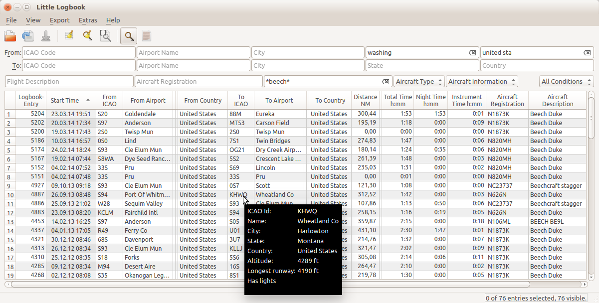
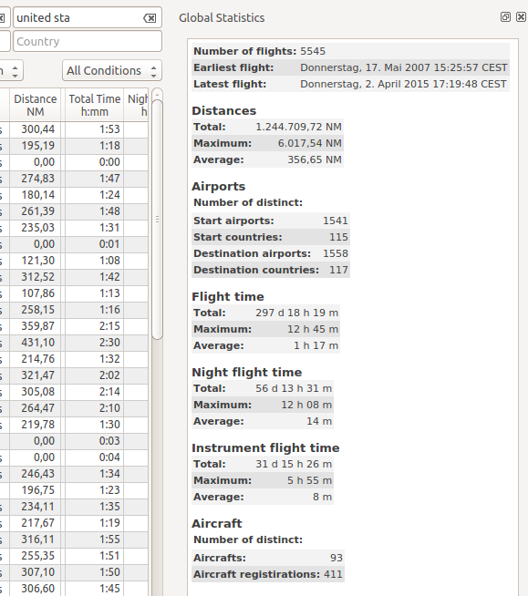

Little Logbook
Links
Releases and Downloads
Help English
Hilfe Deutsch
Githup Little Logbook Project and Sources
Screenshots
Main Window with Search and Tooltip on Airport ICAO

Statistics Dock Window
